1. [Nom de l'apartat 1]
Contingut de l'apartat 1...
Contingut de l'apartat 1...
Contingut de l'apartat 2...
Comandes executades: chmod +x backup_nocturn espia descarrega.sh sospitosos.sh i ls -l
Descripció: Executem la comanda chmod +x per donar permisos d'execució als scripts de la pràctica i després comprovem amb ls -l que ja apareixen amb els permisos corresponents.

Comanda executada: ./sospitosos.sh
Descripció: Executem l'script ./sospitosos.sh per posar en marxa tots els processos en segon pla que hem d'analitzar.

Comanda executada: pstree -p $USER
Descripció: Executem la comanda pstree -p $USER per veure l'arbre de processos del nostre usuari i identificar d'on pengen els processos creats.

Descripció: Mirant la sortida de pstree, identifiquem els PIDs dels dos processos minador que s'estan executant.

Comanda executada: top
Descripció: Executem la comanda top per veure l'ús de recursos en temps real i comprovem que els dos processos minador són els que s'estan menjant la CPU.

Comandes executades: pgrep -l 'minador|espia|backup' i ps -o pid,ppid,user,stat,etime,%cpu,comm -C minador,espia,backup_nocturn
Descripció: Executem pgrep per trobar els PIDs i després fem servir ps amb diferents opcions per veure l'estat exactament de cada procés i quin és el seu procés pare.

Comandes executades: ./descarrega.sh, Ctrl+Z, jobs -l, bg %1 i fg %1
Descripció: Executem la descàrrega, la pausem amb Ctrl+Z, comprovem el seu estat amb jobs -l i la passem a segon pla amb bg i a primer pla amb fg.

Comanda executada: watch -n 1 cat progres.txt
Descripció: Executem la comanda watch -n 1 cat progres.txt des d'una altra terminal per anar veient com avança el fitxer de descàrrega cada segon.

Comanda executada: sudo renice -n -10 -p 8756
Descripció: Executem la comanda sudo renice -n -10 per donar-li més prioritat de CPU al procés de descàrrega i comprovem el canvi de valor NI al top.

Comandes executades: kill 6318 i kill -9 6318
Descripció: Executem primer kill normal per intentar tancar el procés espia i, com que no es tanca, executem kill -9 per matar-lo de forma forçada.

Comanda executada: kill -STOP 4985
Descripció: Executem kill -STOP sobre el procés de la còpia de seguretat per pausar la seva execució momentàniament.

Comanda executada: kill -CONT 4985
Descripció: Executem kill -CONT per reprendre l'execució del procés de backup que teníem aturat.

Descripció: Comprovem a la pantalla del watch que la descàrrega s'ha completat correctament al 100%.

Comanda executada: pstree -ps $(pgrep descarrega)
Descripció: Executem pstree -ps per veure tota la línia de pares del procés de descàrrega fins arribar a systemd.

Aquest apartat encara no té contingut.
Contingut de l'apartat 5...
Contingut de l'apartat 6...
Aquest apartat encara no té contingut.
En aquesta pràctica he comprovat què passa quan es formata un disc i si és possible recuperar els fitxers que hi havia. Per evitar tocar els discs reals del meu ordinador, he creat un fitxer de 200 MiB anomenat disc.img per fer-lo servir com a disc virtual.
He desat a la carpeta de treball la foto PNG, el document PDF i el fitxer de text notes.txt. Primer he comprovat que hi eren tots tres:
Comanda executada: ls -l foto.png document.pdf notes.txt
Descripció: Comprovem la presència i els permisos dels tres fitxers de prova al directori de treball abans de començar la pràctica.
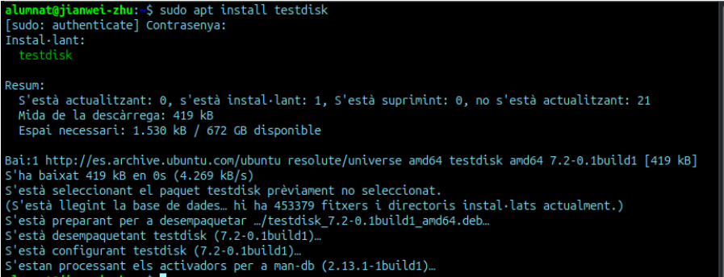
He generat la imatge del disc de 200 MiB i n'he comprovat la mida final:
Comandes executades: dd if=/dev/zero of=disc.img bs=1M count=200 i ls -lh disc.img
Descripció: Creació del disc virtual de 200 MiB omplint-lo amb zeros mitjançant la comanda dd, i verificació de la seva mida resultant.
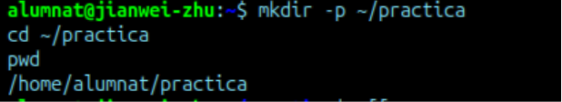
He donat format ext4 al disc virtual:
Comanda executada: mkfs.ext4 disc.img
Descripció: Creació del sistema de fitxers ext4 dins del disc virtual perquè el sistema el pugui interpretar com un disc normal.
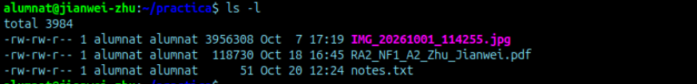
L'he muntat en una carpeta per poder utilitzar-lo com una unitat de disc:
Comandes executades: sudo mkdir -p /mnt/disc i sudo mount disc.img /mnt/disc
Descripció: Es crea el punt de muntatge al sistema i es munta la imatge del disc virtual.
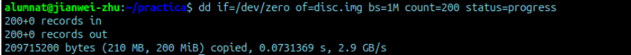
He copiat els fitxers de prova dins del disc muntat i he calculat els seus hashes:
Comandes executades: sudo cp foto.png document.pdf notes.txt /mnt/disc/ i md5sum /mnt/disc/* > hashes.txt
Descripció: Còpia dels tres fitxers a l'interior del disc i generació del fitxer amb el seu hash MD5 per poder verificar-ne la integritat posteriorment.
Després he desmuntat el disc virtual abans de tornar-lo a formatar:
Comanda executada: sudo umount /mnt/disc
Descripció: Desmuntatge segur del disc virtual per poder operar sobre la imatge desconnectada.
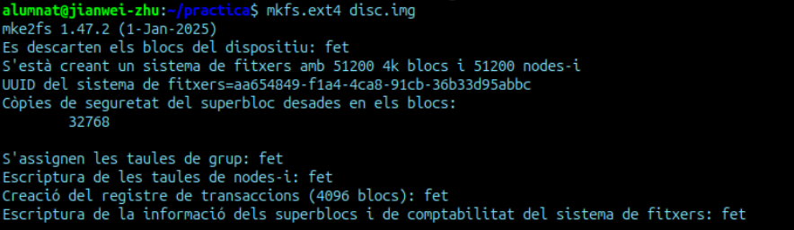
He tornat a formatar el disc virtual:
Comanda executada: mkfs.ext4 disc.img
Descripció: Es sobreescriu el sistema de fitxers recreant un nou sistema ext4, cosa que simula un formatatge d'alt nivell accidental.
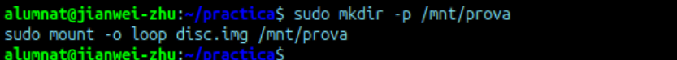
He tornat a muntar el disc per comprovar si es veien els fitxers i des de la terminal apareixia buit:
Comandes executades: sudo mount disc.img /mnt/disc, ls -l /mnt/disc i sudo umount /mnt/disc
Descripció: Es munta el disc i es comprova amb ls que aparentment la carpeta està completament buida (excepte per la carpeta lost+found). Després es desmunta de nou.
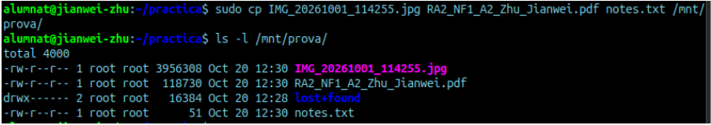
He instal·lat l'eina corresponent per intentar recuperar dades:
Comanda executada: sudo apt update && sudo apt install testdisk
Descripció: Instal·lació de l'eina TestDisk (que inclou PhotoRec) per a la recuperació de dades a la terminal.
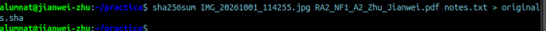
He executat la recuperació sobre la imatge del disc:
Comanda executada: photorec disc.img
Descripció: Execució de l'eina PhotoRec escanejant directament els blocs de la imatge buscant capçaleres de fitxers orfes.
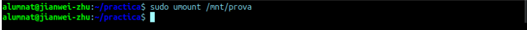
He mirat els fitxers trobats i n'he comprovat els resultats:
Comandes executades: ls -l recup_dir.1/ i md5sum -c hashes.txt
Descripció: Es llisten els fitxers que el programa ha pogut rescatar i es compara el seu hash per assegurar que el contingut recuperat és idèntic al 100%.
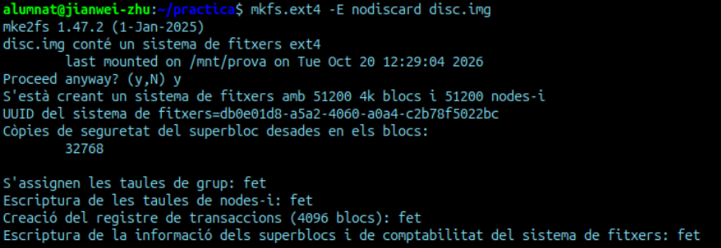
Per recuperar la frase del text directament del disc he fet el següent:
Comanda executada: strings disc.img | grep "Aquesta és la frase secreta"
Descripció: Extracció de totes les cadenes de text brut contingudes dins de la imatge binària del disc filtrant per la frase concreta amb grep.
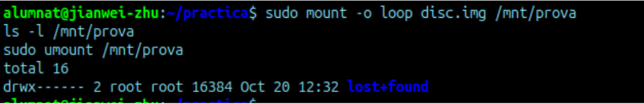
Per fer un formatatge de baix nivell, he sobreescrit tota la imatge:
Comanda executada: dd if=/dev/zero of=disc.img bs=1M count=200
Descripció: Sobreescriptura completa de tots els blocs de la imatge de disc amb zeros, simulant un esborrat o formatatge de baix nivell definitiu.
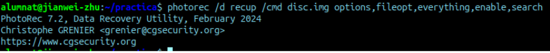
He tornat a provar de recuperar dades per comprovar el resultat:
Comanda executada: photorec disc.img
Descripció: Nou intent d'escaneig amb l'eina de recuperació sobre el disc que acaba de ser sobreescrit.
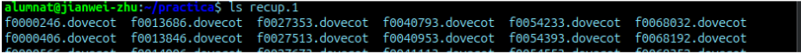
He comprovat la carpeta de resultats:
Comanda executada: ls -l recup_dir.2/
Descripció: Comprovació de com la carpeta de resultats queda buida perquè ja no existeix cap rastre recuperable.
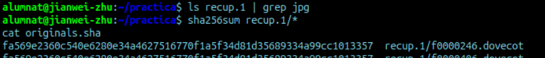
Finalment, he tornat a cercar la frase de text al disc sense èxit:
Comanda executada: strings disc.img | grep "Aquesta és la frase secreta"
Descripció: Cerca de la cadena de text comprovant que ja no hi ha cap sortida, atès que la informació ha desaparegut per complet.
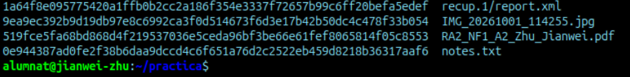
Després de la part 3, el disc semblava buit. On eren realment els teus fitxers?
En el mateix lloc. L'únic que hem fet ha estat esborrar el sistema de fitxers, però els fitxers continuen intactes als mateixos blocs de dades del disc fins que se sobreescriguin.
Per què els fitxers recuperats tenen noms diferents dels originals?
Perquè el nom del fitxer no es guarda al fitxer en si, sinó al sistema de fitxers (índex o metadades). En esborrar-se l'índex, els programes de recuperació llegeixen les dades brutes i els assignen noms nous automàtics.
Com pots demostrar que la foto recuperada és exactament la mateixa que l'original?
Amb el hash que hem generat prèviament. Si coincideix exactament amb el del fitxer recuperat, queda demostrat que tenen el mateix contingut byte a byte.
Per què el programa de recuperació ha trobat la foto i el PDF, però no el notes.txt? Com l'has trobat igualment?
Perquè els fitxers .txt no tenen una capçalera estàndard identificable, com sí que la tenen els fitxers d'imatges o PDF. La informació està escrita en text pla al propi disc i l'he trobat cercant la frase directament sobre la imatge sencera amb les comandes strings i grep.
Quin nivell de formatatge has fet a la part 3 i quin a la part 5?
Un formatatge d'alt nivell a la part 3 (recreant el sistema de fitxers) i un de baix nivell a la part 5 (sobreescrivint tot el disc amb zeros).
Vols vendre un USB on tenies fotos personals. Quin formatatge faries abans de vendre'l i per què?
Un formatatge de baix nivell, reescrivint tota la informació de tots els sectors per assegurar-me que no es puguin recuperar les dades amb programes. Si fossin dades extremadament sensibles, el millor seria directament no vendre'l i destruir-lo físicament.